虛擬書架與書目清單
虛擬書架是供特定目的使用的特殊主題館藏。借出籃是暫時的儲存空間。
到這： 其他 > 虛擬書架
虛擬書架
新增虛擬書架
進入虛擬書架頁面並點選 ‘新增虛擬書架’ 就能新增它
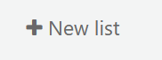
新增的虛擬書架表格提供若干選項：
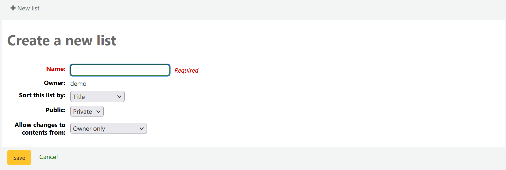
Name: the name is what will appear on the list of lists, it is the only required field
Owner: this is the username of the owner of the list, the creator is the default owner, but that can be changed later
Sort this list by: you can choose how to sort the list (by title, author, publication year, call number or date added to the list)
Public: decide if the list is going to be private or public
私人虛擬書架由您管理並祗能被您看到
A public list can be seen by everybody, including OPAC users
Allow changes to contents from: decide who has permission to add or remove titles from the list
無人：貢獻者不能修改
Owner only: only you will be able to add or remove items from the list. If the list is public or shared, the OPAC users or sharers will not be able to change the list contents.
Anyone seeing this list: everyone who has access to the list will be able to add or remove titles. If the list is public, this means everyone. If the list is private, only the owner will have the ability to change the contents. And if the list is shared, the owner and sharers will have this ability.
Permitted staff only: this option will make the list content editable by staff members with the edit_public_list_contents permission.
Staff only: this option will make the list editable by all staff members (users with the catalogue permission).
虛擬書架也可從目錄搜尋結果新增它
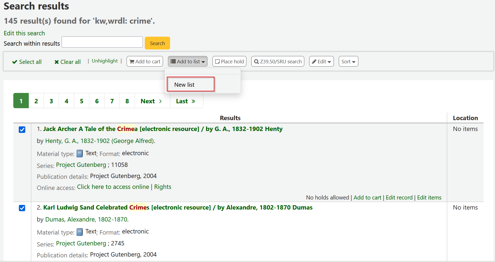
勾選題名左方的盒，新增至新的虛擬書架
從 ‘新增至：’ 下接選單內選取 ‘新增虛擬書架’
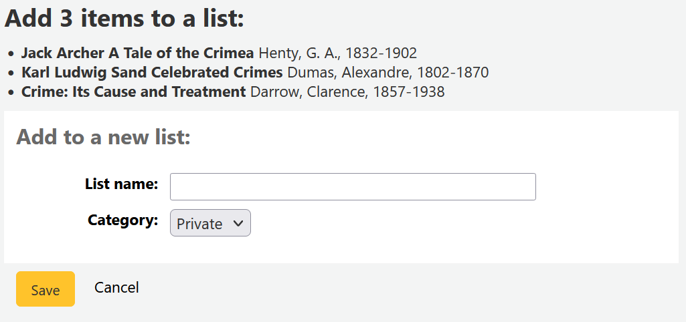
Name: the name is what will appear on the list of lists, it is the only required field
Category: decide if the list is going to be private or public
私人虛擬書架由您管理並祗能被您看到
A public list can be seen by everybody, including OPAC users
虛擬書架的預設排序 (書名) 及預設修改權限 (祗限擁有者)。
儲存之後，虛擬書架就能從虛擬書架頁面與搜尋結果上方的 ‘新增至’ 選單進入該虛擬書架。
新增至虛擬書架
勾選虛擬書架頁面的書架名稱，就能新增題名入該書架
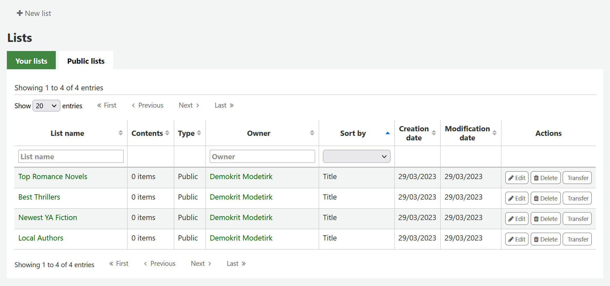
To open a list, click the list name.
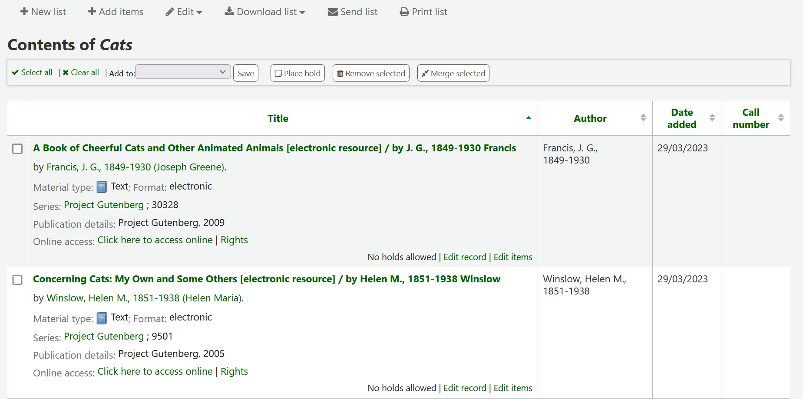
From that page, click ‘Add items’ to add titles by scanning barcodes into the box, or entering biblionumbers.
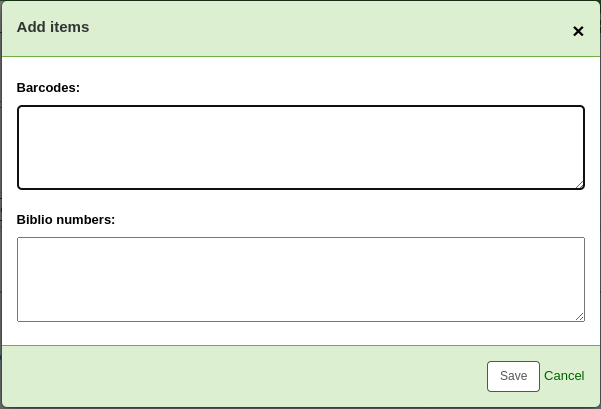
題名可以新增至虛擬書架，勾選搜尋結果的題名，再從 ‘加入’ 選單裡把它加入虛擬書架
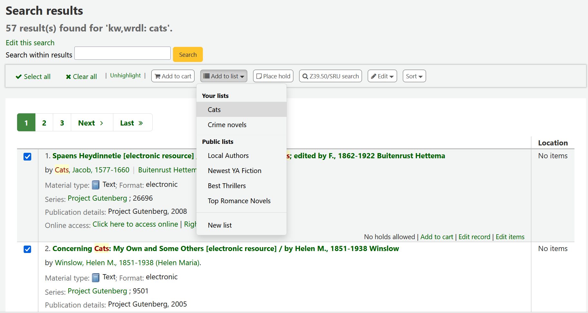
檢視虛擬書架
To see the contents of a list, visit the Lists page in the staff interface
From this page, you can perform some actions on the lists.
Edit: will allow you to edit the description and permissions for this list
备注
For public lists, this option will only appear to staff members with the edit_public_lists permission.
Delete: will delete the list
备注
For public lists, this option will only appear to staff members with the delete_public_lists permission.
Transfer: will allow you to change the owner of the list
备注
This option is only possible on public lists.
This option will only appear to staff members with the edit_public_lists permission.
勾選 ‘虛擬書架名稱’ 將看到該虛擬書架的內容
從此虛擬書架的館藏您可執行多項工作
New list: will allow you to create another list
Add items: will allow you to add items to the list with barcodes or biblionumbers
Edit: will allow you to edit the description and permissions for this list, or delete this list
Download list: will allow you to download the list using one of 3 default formats or your CSV profiles
Send list: will send the list to the email address you enter
备注
The message sent when emailing the list is LIST, which can be customized in the Notices and slips tool.
Print list: will present you with a printable version of the list
按欄位標頭即可依該欄位排序。
借出籃
借出籃是在 OPAC 或館員介面裡暫存館藏資訊的地方。作業結束(關閉瀏覽器或登出)後借出籃內容將清空。借出籃適用於批次作業(館藏資訊、列印、電子郵件)或列印館藏清單或電郵給自己或讀者。
The cart feature can be turned off in the OPAC using the opacbookbag system preference.
If you would like to enable the cart in the staff interface, you need to set the intranetbookbag system preference to ‘Show.’ To add things to the cart, search the catalog and select the items you would like added to your cart and click on the ‘Add to cart’ button.
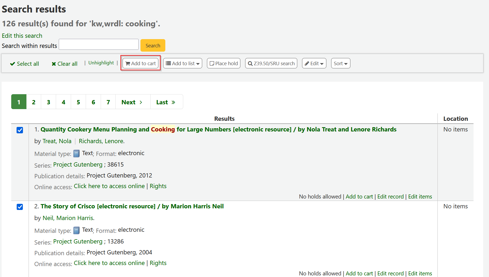
確認訊息將顯示在館員界面上方的借出籃鈕之下
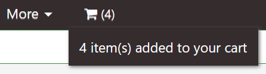
按借出籃圖示將顯示其內容
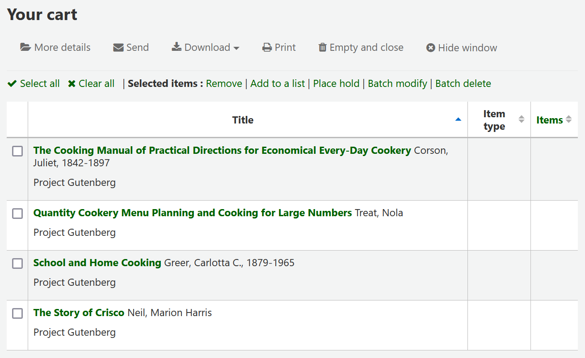
從此虛擬書架的館藏您可執行多項工作
‘其他詳情’ 將顯示借出籃館藏的詳細資訊
‘送出’ 將把虛擬書架送至您鍵入的電子郵件信箱
备注
The message sent when emailing the cart is CART, which can be customized in the Notices and slips tool.
‘Download’ will allow you to download the cart using one of 3 default formats or your CSV profiles
‘列印’ 將顯示此借出籃的列印版
‘清空並關閉’ 將清空虛擬書架並關閉視窗
‘隱藏視窗’ 將關閉該視窗
經由採訪車修改書目紀錄
可以把書目紀錄加入書車，以批次方式修改。選定書車內的紀錄再按 ‘批次修改’ 就可以。
將被帶至 ‘批次修改紀錄工具’，然後其程序等同於選定 經由工具修改.